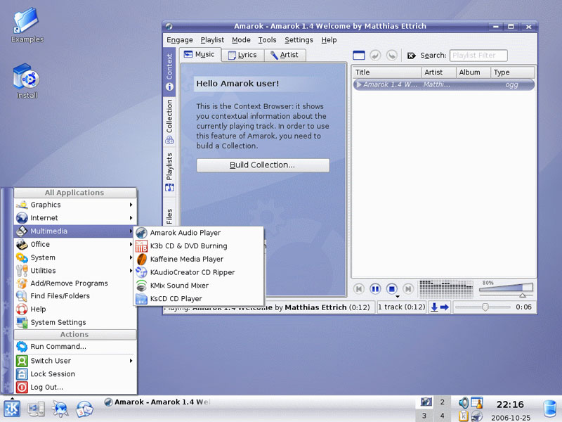

This program is also available in Linux - what does that mean?
Linux is an operating system, like Microsoft
Windows and Mac OS X.
The difference between Linux and those two operating systems is huge -
Linux is totally free. You can download it, install it, use it forever
with no charge. You can even update it at no cost.
How is it free? Without getting into too many details, Linux is open source software - like all of the software on OpenDisc. Tens of thousands of people across the globe contribute time and effort into making Linux the best operating system on the market.
Because it's open source software, a lot of groups (and companies) release their own particular version of Linux - all fundamentally the same, just with different included programs and appearances. These are called Linux Distributions.
The most popular of these Linux Distributions (according to DistroWatch) is Ubuntu. From Ubuntu's website:
"Ubuntu is a community developed, linux-based operating system that is perfect for laptops, desktops and servers. It contains all the applications you need - a web browser, presentation, document and spreadsheet software, instant messaging and much more."
Ubuntu itself comes in four varieties, Ubuntu, Kubuntu, Edubuntu and Xubuntu; we'll stick to the first two for this introduction.
What is the difference between Ubuntu and Kubuntu? They're both essentially identical, but Kubuntu runs a different "window manager", named KDE and Ubuntu uses one called GNOME. To notice the difference, have a look at the two screenshots to the right.
Kubuntu is popular with people switching to Linux, as it looks and acts like modern versions of Microsoft Windows, yet Ubuntu is more popular overall. Whichever one you choose you'll get the same Linux underneath, and if you change your mind you can always install the other window manager later on.
If you want to see how it looks on your computer but are hesitant to take the plunge, download a "Live CD" version of either Ubuntu or Kubuntu. Once you burn it to a disc, pop it in your disc drive and reboot. Linux will boot onto your computer so you can explore it at your own leisure. Once you're finished simply remove the disc and reboot again, and your computer will return to how it was previously with no harm done and no trace of Linux.
Once you've decided to install Ubuntu or Kubuntu you can even choose to install it along-side your current Microsoft Windows operating system, something which is called "dual-boot". With this you can reboot back into Windows if you need to - once you install Linux though you'll wonder why you ever bothered with anything else!


{kind=link}